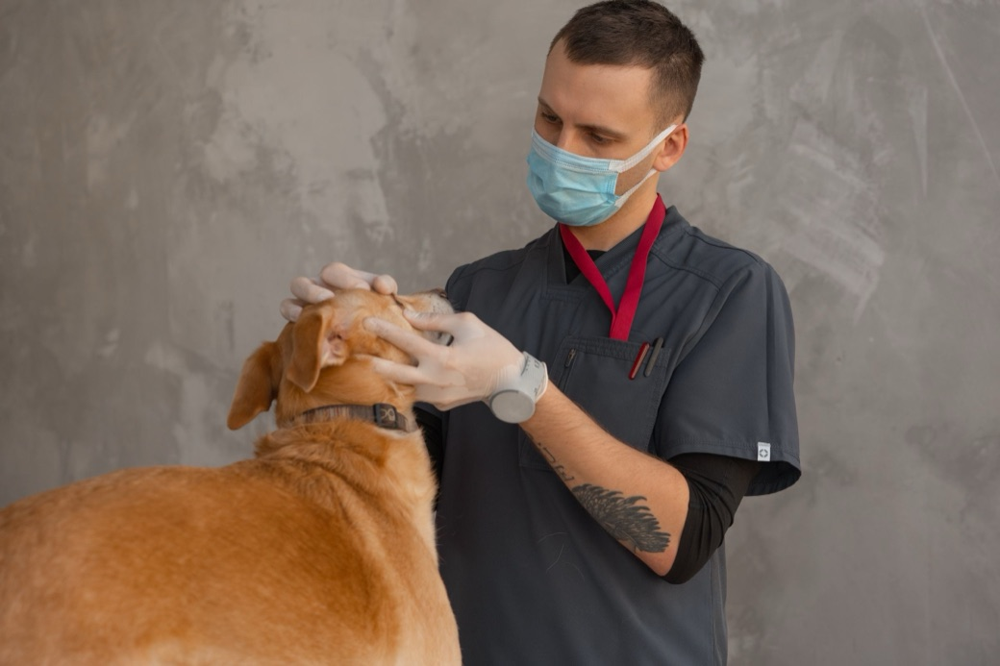

A single episode of vomiting in an otherwise happy, alert dog is often not an emergency — many dogs vomit now and then from eating too fast, a diet change, or a mild stomach upset. But call us right away if the vomiting is repeated (more than once or twice in a few hours), contains blood, comes with diarrhea, weakness, or a bloated belly, or if your dog can't keep water down. When in doubt, it's always safer to let us take a look.
In my years caring for pets here in North Miami and Aventura, "my dog just threw up — should I worry?" is one of the questions I hear most. It's also one of the most important to get right, because the honest answer ranges from "keep an eye on them at home" to "come in now." Below, I'll walk you through how I think about it, so you can feel more confident the next time it happens.
What causes vomiting in dogs?
Most of the cases I see fall into a few common buckets:
- Eating too fast or too much — the most common, and least worrying, cause.
- Diet changes or table scraps — a new food or a bite of something rich can easily irritate the stomach.
- Eating something they shouldn't — grass, trash, a toy, or a toxic food like chocolate, grapes, raisins, xylitol (a sweetener), or onions.
- Parasites or infections — especially in puppies and unvaccinated dogs.
- An underlying illness — kidney, liver, or pancreas problems. Some of these look mild at first, which is exactly why I take a pattern of vomiting seriously.
A single vomit followed by a dog who wants to play and drink is usually minor. A pattern of vomiting, or vomiting plus other symptoms, is your signal to call us.
When is dog vomiting an emergency?

Please come in — or call us immediately — if you notice any of these red flags:
- Vomiting more than twice in a few hours, or on and off for more than a day
- Blood in the vomit — fresh red, or dark "coffee-ground" material
- A swollen, hard, or bloated belly, or retching without bringing anything up (this can signal bloat, a true emergency)
- Weakness, collapse, pale gums, or trouble standing
- Vomiting with diarrhea, especially if either contains blood
- Can't keep water down — dehydration sets in fast in our heat
- Possible contact with a toxin, medication, or a toad (more on that next)
- Puppies, senior dogs, or dogs with existing conditions — they have less reserve, so I'd rather see them sooner
A South Florida warning: cane toads
Here in North Miami, Aventura and across Miami-Dade, there's a local hazard I wish every dog owner knew about: cane toads (also called "bufo" toads). They're common, especially in the warm, rainy months, and they're toxic to dogs. A dog that mouths or bites one can start drooling heavily, pawing at the mouth, vomiting, and showing bright-red gums within minutes — and it can become life-threatening fast.
If you suspect toad contact: gently wipe your dog's gums and tongue with a wet cloth, rinsing from the side of the mouth so water doesn't go down the throat, and head to a vet immediately. Don't wait to see if it passes. This is one of the most important things I tell my South Florida clients.
What can I do at home for mild vomiting?
If your dog vomited once but is bright, alert, and acting like themselves, it's usually reasonable to:
- Rest the stomach — hold off on food for a few hours (not longer for puppies or small dogs, who can't fast safely).
- Offer small amounts of water frequently, rather than one big bowl all at once.
- Reintroduce a bland meal — a little plain boiled chicken and rice — then ease back to normal food over a day or two.
- Watch closely. If the vomiting returns, or any red flag appears, call us.
What I'd ask you not to do: don't give human medications (many are dangerous to dogs), and don't try to make your dog vomit unless we've told you to.
Frequently asked questions
How long is too long to wait?
If your dog vomits more than once or twice, keeps vomiting past a few hours, or shows any red flag above, don't wait — call us the same day.
Should I feed my dog after they throw up?
Give the stomach a short rest, then offer a small bland meal. If they bring the bland food back up, it's time for a visit.
My dog threw up but seems totally fine — do I still need the vet?
One episode in a happy, playful dog is often okay to monitor at home. Repeated vomiting, or any other symptom, means it's time to be seen.
Is vomiting worse in summer here?
Our heat and humidity make dehydration happen faster, and the rainy season brings more toads and spoiled-food smells on walks — so I do tend to see more stomach issues in the warmer months.
When in doubt, let us take a look
You know your dog better than anyone. If something feels off, trust that instinct — it's always better to check. My team and I care for pets across North Miami and Aventura, and we're always happy to help you figure out whether your dog needs to be seen or can safely rest at home.
Worried about your dog?
Call us or book an appointment — we'll help you get answers quickly.
Dr. Ahuja earned her Doctor of Veterinary Medicine from Cornell University, where she was inducted into the Phi Zeta Veterinary Honor Society, and completed an internship in emergency and specialty care at Friendship Hospital for Animals in Washington, D.C. She is Fear Free Certified and focuses on chronic-disease management — guiding pet owners through early diagnosis, intervention, and lifelong care at Animal Clinic of Ives Dairy Road in North Miami.
This article offers general guidance and isn't a substitute for an exam. If your pet is unwell, please contact your veterinarian.